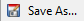

Setting Up Workspace¶
Note
If you haven't installed the program yet, please click here to get started.
It is recommended to invest in a drawing tablet if you want to use the program to create digital art, but using the good old-fashioned mouse is still perfectly fine to create your art as well. In this section, we'll be guiding you on setting up your workspace and understanding how to get started on creating a project (it could be editing photographs to drawing landscapes).
If you aren't familiar with the tools and the menus, we recommend to check out the General Overview page to learn more and give context to the workspace.
Default Setup¶
Open the Pinta application if you haven't already, and you will see a blank workspace that looks like this:

As you can see from the Layers Window, you have one layer called Background. When you want to work on an illustration or a photograph, you will need to create another layer to work on because you want to keep the background layer for any background elements that will show in your final image. To create a new layer, see Add Layer under Creating & Removing Layers page here.
Once you have setup your new layer, you can start working on your project in that new layer or any other new layers you have created. If you need to import an image to a layer, please see Import File into Layer under Creating & Removing Layers page here.
Setup with a Custom Canvas¶
When you open the Pinta application, it starts up with a default canvas size of 640 x 480. You can create a custom size depending on the project you are creating. For example, you want to create a banner such as this:

You can create a new image and select the desired sizing of your canvas.
- Click on New... in the Toolbar or under the File menu.
- Customize the canvas size using the preset or the options listed to modify the width, height, orientation, and the type of background. You can see a preview of it in the window when you are making the modifications.

- Click OK to apply the change.
Setup with a Screenshot¶
You can create a project with a screenshot of your screen(s) as well too. If you have multiple screens, it will also capture those too, so it is recommended to use the cropping tool to keep what you need.
- Click on New Screenshot...
 under the File menu.
under the File menu. - Customize how long of a delay you require for the capture to start.

- Click OK to begin the countdown and it will create a canvas the size of your screen(s).
Customizing the Workspace¶
Before you begin to work on your project, you can customize how your workspace looks to make the area easier for you to use. Using the View menu, you can: - Check or uncheck the Toolbar to hide or view it. - Check or uncheck the Pixel Grid to turn on or off the pixel-sized gridlines (mainly used for pixel editing). - Check or uncheck the Rulers to hide or view the workspace pixel-sized rulers. - Change your ruler measurement in case you needed to use inch or centimeters instead of pixels. - Use the zooming function if you need to take a closer look at your work area. - Use Normal Size to view your image at 100% zoom. - Use Best Fit to view the image in its entirety. - Check or uncheck your workspace tools and windows to hide or view any features your may need.
Saving the New Project¶
Once you have created your project in the workspace, you would want to save your progress as an ORA file so that you can continue it the next time you are editing the same project. ORA stands for OpenRaster Image. The purpose of this file type is to save the images with the layers still intact so you can utilize the file in any raster graphic editor. If the file is saved as a PNG, JPEG, or TIFF as an example, it becomes a final compostion of the image and the visible layers will be flatten together to export to a final image file. To export the file as an image, please see the exporting information under the Exporting Project pages.
- Click on Save As...  under the File menu.
- Select the directory to save the project in.
- Select "OpenRaster image (.ora, .ORA)" under the bottom drop-down list.
- Click Save to save the new project.
Using Undo or Redo Functions¶
You can undo and redo any actions taken in Pinta by going into:
- The Edit menu.
- The Toolbar buttons.
- Using keyboard shortcuts for undo (CTRL + Z) and redo (CTRL + Y).
- Using the list of actions in the History Window (skip back to undo a row of actions and skip ahead to redo those actions).
Your actions are unlimited so you can undo the whole history if you wanted to. Just take note, those actions will disappear once you close the Pinta application, even if the project file was saved as an .ora file.